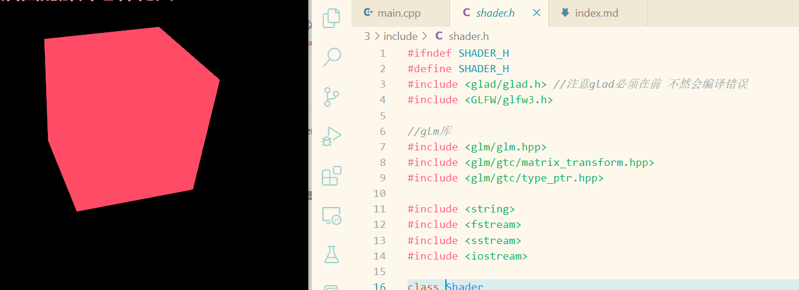
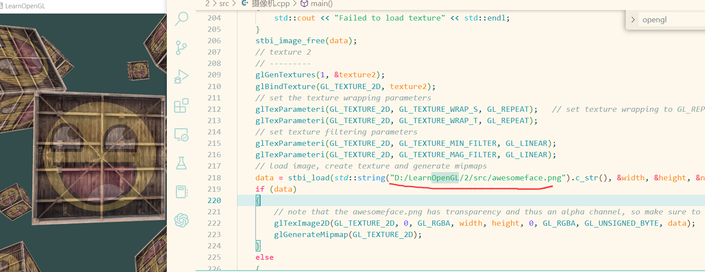
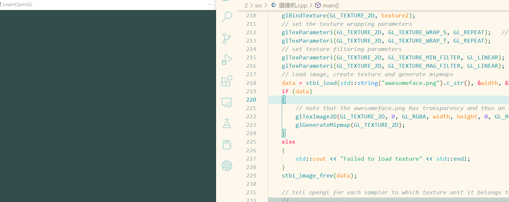
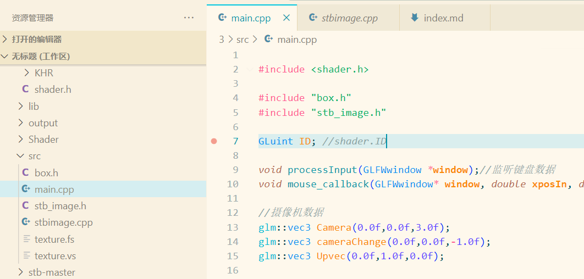

游戏开发学习一:Opengl配置和遇到的问题
opengl配置: VScode + MinGW g++(64位) 具体配置细节可以看这篇文章VSCODE+Opengl配置
注意由于我们选择了64位G++所以glfw也选择64位并且GLad编译选择G++ ./src/glad.c -c -I ./include/👈很重要
关于OPengl
本人能力有限 Opengl部分推荐学习LearnOpengl(网页直搜)并配合games101食用(B站搜索直接能观看)
本人的vscode+opengl目录(github仓库地址):
入门创建摄像机
注意我本机环境复杂生成的makefile文件复杂 生成文件再build文件夹或者output
Glad和Glfw头文件顺序问题

注意包含glad和glfw的头文件顺序不能相反 先是glad 再是glfw
stb_image 头文件使用问题
- 问题一: stb_image相对路径加载不了图像
 下图是无法编译的代码  我们发现stb_image使用了相对路径图像加载失败了(好郁闷)
- 问题二: stb_image文件编译问题解决方法:
这里来说说我的解决方法

如图创建一个cpp文件包含两句预编译代码 并且再main.cpp中使用
#include "stb_image.h"注意stb_image.h头文件是我在stb_master复制过来的
 这里也有很奇怪的BUG 如果不把#include "stb_image.h"放在最后(时常编译不成功)